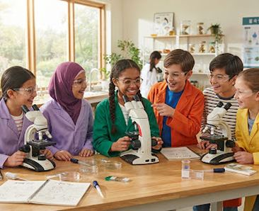

핵심 기능 · 교육·프로그램 / 연구·생태 데이터
대상·주제·기간별 프로그램부터
대상·주제·기간별 프로그램부터
생태 데이터 시각화까지
가족·자녀 대상 프로그램을 찾고 신청하세요. 연구자료는 생물·생태계 콘텐츠와 연결됩니다.


생태 연구 데이터 시각화
국립생태원의 최신 연구 데이터를
국립생태원의 최신 연구 데이터를
직관적으로 이해할 수 있습니다
한반도 기온 변화 추이 (2000–2023)
지난 20여 년간 한반도의 평균 기온 변화를 나타내는 데이터입니다. 온난화 추세를 시각적으로 확인할 수 있으며, 이는 다양한 생물종의 서식지 변화와 직결됩니다.
연구 데이터→서식지 변화→관련 생물·생태계

2023 멸종위기 야생생물 서식 실태 조사
전국 주요 습지 및 산림 지역의 멸종위기종 서식 현황과 생태적 특징을 분석한 연간 보고서입니다.
외래생물 생태계 위해성 평가 결과
새롭게 유입된 외래종이 토착 생태계에 미치는 영향을 정량적으로 평가하고 관리 방안을 제안합니다.